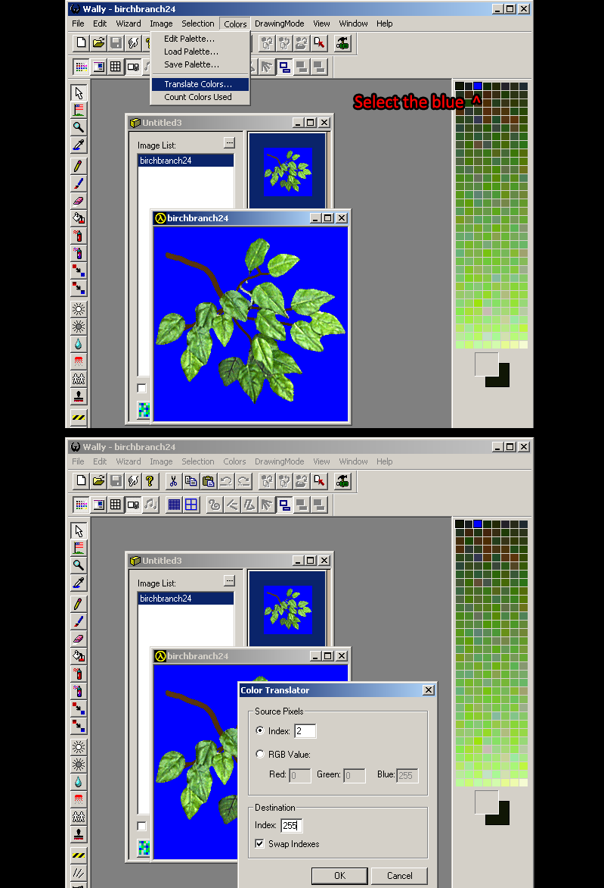

INTRODUCTION
With a long history of models being decompiled, recompiled, hacked, changed and passed from one program to the next there has been a large amount of GoldSrc models out there that have suffered some sort of damage in one way or another. Common problems are UV crunching or misalignment, walk animations that have slowed down, smoothing errors or lack of smoothing groups, and other issues. This guide will cover some methods of fixing these problems.
EXAMPLES
The prerequisite of this guide is the Modelling Mega thread as it will be needed to know about how to import/export SMDs
GoldSrc Modelling Mega Tutorial Thread
When decompiling models Be sure you also have the latest version of Crowbar and use in this configuration:

For your compiler use the Sven Coop studiomdl.exe. If you already have the Sven Coop SDK it installed (Under Tools in steam), Crowbar already has a config for it, if not, you can get the exe here:
Sven Studiomdl.exe
More info on this compiler here.
Be sure to check "Use non-valve UV conversion" as it generally gets best results with this compiler.
Table of Contents:
UV Quick Shift Repair
UV Manual Repair
Wrong Skinning & Bad Deformation
Texture Issues
Normals & Shading Artifacts
NPC Sliding Fix
Hitbox and Attachment changes
Consolidating "T." & part models
UV Shift Repair
An unfortunate side effect of recompiling models with the older studiomdl.exe compilers is that the UVs get slightly shifted out of scale upon compile. With large textures this is usually negligible, but is more noticible on smaller textures. This can cause texture alignment problems on your newly made model or worse on an edited/recompiled model. Over time people have decompiled and recompiled models to the point where this becomes a much more noticable issuse.
The first method ill show is a quick fix that will usually work for most cases, Ill cover 3dsmax, Blender & MS3D. For more severe damage, you will likley have to manually move the shells in your 3d editor which Ill cover after the quick fix:
Quick UV fix for 3dsmax
1) For your newly created model put a unwrap UVW modifier on it. Go to face mode, CMD-A to select all faces, then put into script box:
$.modifiers[#unwrap_uvw].unwrap2.ScaleSelectedXY 1.007 1.007 [0,1,0]
and hit enter to scale your UV's. In your viewport it may look slightly off but the nature of this fix is compensating for the downscale that happens upon compiling the model. Export your model.
For Older versions of 3dsmax with imported models, we have the challenge of fixing UV's on geometry with explicit normals. Older versions tends to break these normals on editing geometry & other modifiers; you can skip this if using any of the 3dsmax versions in the last 4 years as they fixed UV modifier breaking normals.

1) Select the editable mesh, add a "edit normals" modifier to save a snapshot of the models normals
2) then select the editable mesh again, then put your UVW unwrap modifier (you will notice the smoothing breaks, but when done the edit normals modifier above fixes it due to stack hierarchy).
3) Proceed with the shifting method as above but this time I upped the number to 1.012 instead of 1.007 (because this particular model I had was badly shifted). This code will look like this:
$.modifiers[#unwrap_uvw].unwrap2.ScaleSelectedXY 1.012 1.012 [0,1,0]
4)Now with the stack in this order select the skin and go to export and be sure to make explicitly set.

As you can see, the fix has had noticable difference.
1)Go into Edit mode and open UVs view
2)Open display tab and check the "cursor location" & "normalized" boxes
3)Set the cursor location to X 0.00 Y 1.0
4)Make sure your pivot mode is set to cursor, then press "S" to scale and type in 1.007 and hit enter
1)Select all groups, go into texture editor (Cmd-T) and press scale button.
2)Set factor:
1.007 1.007
press the S button to commit scale.
3)Repeat the same for any other textures.
1)Select all polygons, then go to UV editor
2)Set grid spacing to 1, then grab the bottom right most corner and move in one pixel
UV Shift Manual Repair
There are times when even doing the above will not totally fix your UV shells and if you need to manually move them you can do that in your 3D editor.
Manual Fix For 3dsmax:
1) add a UVW modifier to your stack and then press the "Edit UVs" button to manually move the shells, select face mode then "element" checkbox for easy selecting whole shells.
2)You can now move them around by dragging and scaling with the gizmos on top. Once done close the UVW window. For more on UV editing or re-uving existing maps id reccomend Arrimus3d video series on this topic.
Manual Fix For Blender:
1) First make sure you have your materials set up like in this procedure. Go into UVW editor tab or set your active window to it.
2)Go into edit mode then unselect everything, then go to your materials tab, choose a material in the list and press "select". This will ensure only your working material will show up while editing.
3)Then go into yout UV layout window and now you can manipulate the UVs. Island selecting will be your most used to position whole UV shells. Here I am using G hotkey for move (using X & Y after are good for axis constraint). Blenderguru video on this topic
Manual Fix For fragMOTION:
1) Import your SMD then select assigned faces from chosen material on the material rollout. Then open the UV editor, turn off grid snapping
2)With face select chosen select your UVs, then use the move or scale tools to do your fixes.
3)Then export the SMD mesh. I cover exporting for fragMOTION here.
Wrong Skinning & Bad Deformation
The first issue is a simple wrong skin assignment where the solution is just importing the SMD, slecting the problem verticies on the model, then changing their bone assignment. For example if you have a viewmodel where some verts of the gun are "sticking" to the hand then you find those verticies, and assign them back to the gun.
The second case is a little more difficult where you have bad deformation and/or collapsing joints. The first thing to do in this situation is make sure the mesh is as close to its skeleton as possible, and if there is a size or position mismatch then you will likey need to slightly deform your model. What I do in cases like this is I use "soft selection" or "falloff" or "proportional editing" where a selection of verticies will move others around it in a radial falloff. This makes distorting much smoother and more natural.
One big thing is people who skin to models with the joint topology mismatching the bone position, and sometimes you have to distort or streach the topology areas to match slightly. If you cannot do this without really breaking what the model looks like, then you may have to re-cut and re-skin some of the model. Example being cutting new loops in the model and removing/disollving the old ones then re-skinning to bone. Other solutions are changing the parts of the skin entierly like changing shoulder clavicle bone assignment vs upperarm and so forth.
Texture Issues
Issue: Transparent texture not transparent
The first solution to this is as simple as forgetting to either set the $texrendermode "texture.bmp" masked or just setting the flag in HLMV. If this does not work then you may have a wrong transparent pallete index.
If this is the case then I have a Photoshop and a non-photoshop method. First the Photoshop method where you open the BMP, select all then copy the image. Then go to Image>Mode then "Color Table..." and remove the blue from the wrong index. Then click the very last color of the pallete and change its color to pure blue (sometimes you may find one thats green or another so use that if thats the case). Then when done paste the image back and save it.
To fix without Photoshop, use Wally.exe to swap indexes. This is done by creating a new wad file>New wad ("Half-Life [WAD3] package") then drag and drop your bmp as before but this time click the blue color in the pallete preview and go to Color> Translate Colors... Put "Index 255" as the destination and then check "Swap Indexes". When done right click and export BMP.

Vertex Normal/Shading Fixes
The most common shading issue ive seen is when all hard edges are lost and everything is smoothed together which turns the model into a muddy mess of lighting. A good example is what you saw with that minigun I showed at the beginning of this document.
First I need to explain the concept of "Smoothing groups" or "Smooth shading" and vertex normals. Every vertex in a model has a "normal" which defines how the polygon attached to it will be lit. Each normal is like a stick that can be moved around and that will change how the model is lit. In 3d programs they define this usually by "smoothing groups" where any selection assigned to one will smooth the polygons together, and any other one will be independent from the first; together these will create smooth or hard edges at the boundaries of these groups. Now when these are set and the mesh has been exported to SMD, these internal "groups" are baked into the mesh. This is known as explicitly set normals. Some 3d editors can deal with these fine but others not so much. Further understanding of smooth shading you should watch this video by The Guerrilla CG Project.
For 3dsmax The methods of normal editing are covered in this section.
For Blender The methods of normal editing are covered in this section.
There are other times when simply editing smoothing still doesn't fix some shading errors. At this point we run into the much more difficult task of finding topology issues, flipped triangles, unwelded verticies and other such things. I wont be able to go into full detail on how to do all of these since they are very program dependant and sometimes may require you even remodel a part and subsequently redo the UVs too. Some tips though: Select a problem face and try moving it, if the geo is connected then you may just have a flipped triangle, if parts of it shred then you have unwelded verticies. You can either use target welding aka merge by distance or other methods to weld. Flipped normals can be easier identified by turning on backface culling, and then flipping the polygon or recalculating normals.
NPC Sliding
GoldSrc models that have been decompiled multiple times with the older mdldec.exe will suffer from forwards motion loss in walk/run sequences. This creates a slower NPC than the originals which can even affect gameplay. To verify, you will need to find the distance of the walk/run animations. The easiest method is to find an original unmodified retail NPC such as say the vanilla HL install scientist, then use Solokillers HLAM.
1) Open your model in HLAM and in the "Sequence" tab choose a walk/run animation. Go to the bottom right and slow the animation down by moving the slider. Then click on the "scene" tab, then select "ground" then enable the following: "Show Ground", "Enable Texture" & "Enable Tiling". This will give you a good visual of how the motion extraction animation synchs with the ground.
2) Switch back to the "Sequence" tab and then observe the "Linear Movement" field. The linear NPC movement is essentially 47 units forward. With this in mind, now we have the retail distance known.
3)Open the model you need to fix, then take a look at the linear movement. Obviously this particular model is significantly slower and can be seen de-synching with the floor in the animation. Paste in the observed distance we got from before so 47. The model now has the same movement as the retail model. You can also do some tweaking the value if wanted too.
For manual editing if needed or for some reason cannot use HLAM; decompile the model, or look at the HLSDK sources. Then either open in 3d editor and compare the distance on the root bone axis, or in notepad++ get the value from the 1st node on the last frame compared to the first frame (see the SMD format chart)
{kind=link}
The quick and easy way is if you are sure its a model based off an original existing model for example say a model thats based off an Hgrunt thats just a mesh change, in that case you can just decompile the original hgrunt then the model you are trying to repair and just swap out the reparing model anims with the original anims. If you cannot find a model its based off of or its a unique animation or bones structure, then to manually fix it do it this way:
3dsmax Sliding Fix
Blender Sliding Fix
{kind=link}
{kind=link}
You can do this in other editors but ive found that other editors won't allow you to isolate one axis so you would lose animation keyframes on tilting or rotating which would mess up how the walk/run would look.
Hitbox and Attachment Changes
Recently this has become easier as with HLMV Standalone now allows for direct edits to hitboxes, attachments and origin.
Download latest HLMV Standalone here
Load your model and navigate to the Hitbox tab and there you will have buttons on changing the XYZ of the hitbox areas. You can either resave the model or copy the QC string generated. Same goes for Attachment tab.
One thing to note, if your model is using bodygroups and one bodygroup mismatches the hitbox, then you should edit that bodygroup SMD mesh to match the skeleton closer, because changing the hitbox will align with one then not the other.
For testing purposes, you can use a model viewer to see your hitbox. In-game you can use the console command r_drawentities 4 for hitboxes overlayed on your model or r_drawentities 3 for just the hitboxes. For more info see the $hbox section of the QC guide.
Consolidating "T." & part models
A lot of older models use the obsolete separated format models which can be a headache for modern model distribution especially with Counter-Strike or Sven-Coop since any additional model part takes up .res entries. The fastest and easiest way is to use w00tguys "Modelguy" CMDline program. Is as simple as modelguy merge barney.mdl. This will automerge all the parts into one mdl file.
The manual method, if needed or need more other QC changes, is decompiling the model with Crowbar and removing the $externaltextures and $sequencegroupsize commands from the QC, resave, then recompile.